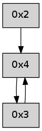

>> << IDX [start] -100 -25 -5 +0 +5 +25 +100 [250.059607983]
 Previous packets
----------------------------------------------------------------------
245.020236 beacon01(adaf) #0 coord=01,02,03,04 cycle=304.0ms assoc
-- color-indic=0 64 16 60
245.030188 beacon02(adaf) #0 coord=01,02,03,04 cycle=304.0ms assoc 64 06 05
245.040189 beacon03(adaf) #0 coord=01,02,03,04 cycle=304.0ms assoc 64 49 a9
245.050188 beacon04(adaf) #0 coord=01,02,03,04 cycle=304.0ms assoc 64 97 f4
245.061839 [Hello(4): seq=31 sym=3,2 sysInfo= stat=3:11,0,0,0/2:0,0,0,0]
----------------------------------------------------------------------
245.364333 beacon01(adaf) #0 coord=01,02,03,04 cycle=304.0ms assoc
-- color-indic=0 64 8d 9c
245.374286 beacon02(adaf) #0 coord=01,02,03,04 cycle=304.0ms assoc 64 9d f9
245.384285 beacon03(adaf) #0 coord=01,02,03,04 cycle=304.0ms assoc 64 d2 55
245.394285 beacon04(adaf) #0 coord=01,02,03,04 cycle=304.0ms assoc 64 0c 08
245.405970 [Hello(2): seq=530 sym=4 asym=3 sysInfo= stat=4:3,0,0,0/3:2,0,0,0]
----------------------------------------------------------------------
245.708430 beacon01(adaf) #0 coord=01,02,03,04 cycle=304.0ms assoc
-- color-indic=0 64 63 d6
245.718383 beacon02(adaf) #0 coord=01,02,03,04 cycle=304.0ms assoc 64 73 b3
245.728382 beacon03(adaf) #0 coord=01,02,03,04 cycle=304.0ms assoc 64 3c 1f
245.738382 beacon04(adaf) #0 coord=01,02,03,04 cycle=304.0ms assoc 64 e2 42
245.750031 [Hello(4): seq=32 sym=3,2 sysInfo= stat=3:12,0,0,0/2:0,0,0,0]
----------------------------------------------------------------------
246.052528 beacon01(adaf) #0 coord=01,02,03,04 cycle=304.0ms assoc
-- color-indic=0 64 51 09
246.062480 beacon02(adaf) #0 coord=01,02,03,04 cycle=304.0ms assoc 64 41 6c
246.072480 beacon03(adaf) #0 coord=01,02,03,04 cycle=304.0ms assoc 64 0e c0
246.082483 beacon04(adaf) #0 coord=01,02,03,04 cycle=304.0ms assoc 64 d0 9d
246.094162 [Hello(2): seq=531 sym=4 asym=3 sysInfo= stat=4:4,0,0,0/3:2,0,0,0]
----------------------------------------------------------------------
246.396624 beacon01(adaf) #0 coord=01,02,03,04 cycle=304.0ms assoc
-- color-indic=0 64 bf 43
246.406579 beacon02(adaf) #0 coord=01,02,03,04 cycle=304.0ms assoc 64 af 26
246.416577 beacon03(adaf) #0 coord=01,02,03,04 cycle=304.0ms assoc 64 e0 8a
246.426580 beacon04(adaf) #0 coord=01,02,03,04 cycle=304.0ms assoc 64 3e d7
246.438233 [Hello(4): seq=33 sym=3,2 sysInfo= stat=3:13,0,0,0/2:0,0,0,0]
----------------------------------------------------------------------
246.740722 beacon01(adaf) #0 coord=01,02,03,04 cycle=304.0ms assoc
-- color-indic=0 64 39 49
246.750675 beacon02(adaf) #0 coord=01,02,03,04 cycle=304.0ms assoc 64 29 2c
246.760677 beacon03(adaf) #0 coord=01,02,03,04 cycle=304.0ms assoc 64 66 80
246.770674 beacon04(adaf) #0 coord=01,02,03,04 cycle=304.0ms assoc 64 b8 dd
246.782342 [Hello(2): seq=532 sym=4 asym=3 sysInfo= stat=4:5,0,0,0/3:2,0,0,0]
----------------------------------------------------------------------
247.084818 beacon01(adaf) #0 coord=01,02,03,04 cycle=304.0ms assoc
-- color-indic=0 64 d7 03
247.094770 beacon02(adaf) #0 coord=01,02,03,04 cycle=304.0ms assoc 64 c7 66
247.104771 beacon03(adaf) #0 coord=01,02,03,04 cycle=304.0ms assoc 64 88 ca
247.114770 beacon04(adaf) #0 coord=01,02,03,04 cycle=304.0ms assoc 64 56 97
247.126417 [Hello(4): seq=34 sym=3,2 sysInfo= stat=3:14,0,0,0/2:0,0,0,0]
----------------------------------------------------------------------
247.428914 beacon01(adaf) #0 coord=01,02,03,04 cycle=304.0ms assoc
-- color-indic=0 64 e5 dc
247.438866 beacon02(adaf) #0 coord=01,02,03,04 cycle=304.0ms assoc 64 f5 b9
247.448866 beacon03(adaf) #0 coord=01,02,03,04 cycle=304.0ms assoc 64 ba 15
247.458866 beacon04(adaf) #0 coord=01,02,03,04 cycle=304.0ms assoc 64 64 48
247.470505 [Hello(2): seq=533 sym=4 sysInfo= stat=4:6,0,0,0]
----------------------------------------------------------------------
247.773011 beacon01(adaf) #0 coord=01,02,03,04 cycle=304.0ms assoc
-- color-indic=0 64 0b 96
247.782963 beacon02(adaf) #0 coord=01,02,03,04 cycle=304.0ms assoc 64 1b f3
247.792964 beacon03(adaf) #0 coord=01,02,03,04 cycle=304.0ms assoc 64 54 5f
247.802964 beacon04(adaf) #0 coord=01,02,03,04 cycle=304.0ms assoc 64 8a 02
247.814604 [Hello(4): seq=35 sym=3 sysInfo= stat=3:15,0,0,0]
----------------------------------------------------------------------
248.117107 beacon01(adaf) #0 coord=01,02,03,04 cycle=304.0ms assoc
-- color-indic=0 64 90 6a
248.127059 beacon02(adaf) #0 coord=01,02,03,04 cycle=304.0ms assoc 64 80 0f
248.137060 beacon03(adaf) #0 coord=01,02,03,04 cycle=304.0ms assoc 64 cf a3
248.147059 beacon04(adaf) #0 coord=01,02,03,04 cycle=304.0ms assoc 64 11 fe
----------------------------------------------------------------------
248.461203 beacon01(adaf) #0 coord=01,02,03,04 cycle=304.0ms assoc
-- color-indic=0 64 7e 20
248.471155 beacon02(adaf) #0 coord=01,02,03,04 cycle=304.0ms assoc 64 6e 45
248.481155 beacon03(adaf) #0 coord=01,02,03,04 cycle=304.0ms assoc 64 21 e9
248.491156 beacon04(adaf) #0 coord=01,02,03,04 cycle=304.0ms assoc 64 ff b4
248.502770 [Hello(4): seq=36 sym=3 sysInfo= stat=3:0,0,0,0]
248.505461 ..2e2100 -- association-request >>>> 0001
248.508278 ..2e2100->..2e2100 -- association-response successful addr=0005
----------------------------------------------------------------------
248.805301 beacon01(adaf) #0 coord=01,02,05,03,04 cycle=368.0ms assoc
-- color-indic=0 64 1e 9a
248.815257 beacon02(adaf) #0 coord=01,02,05,03,04 cycle=368.0ms assoc 64 24 3b
248.825259 beacon05(adaf) #0 coord=01,02,05,03,04 cycle=368.0ms assoc 64 6f 77
248.835262 beacon03(adaf) #0 coord=01,02,05,03,04 cycle=368.0ms assoc 64 ec 91
248.845259 beacon04(adaf) #0 coord=01,02,05,03,04 cycle=368.0ms assoc 64 a7 dd
248.856895 [Hello(2): seq=535 sym=4 sysInfo= stat=4:8,0,0,0]
----------------------------------------------------------------------
249.223403 beacon01(adaf) #0 coord=01,02,05,03,04 cycle=368.0ms assoc
-- color-indic=0 64 c9 04
249.233359 beacon02(adaf) #0 coord=01,02,05,03,04 cycle=368.0ms assoc 64 f3 a5
249.243360 beacon05(adaf) #0 coord=01,02,05,03,04 cycle=368.0ms assoc 64 b8 e9
249.253361 beacon03(adaf) #0 coord=01,02,05,03,04 cycle=368.0ms assoc 64 3b 0f
249.263361 beacon04(adaf) #0 coord=01,02,05,03,04 cycle=368.0ms assoc 64 70 43
249.275002 [Hello(4): seq=37 sym=3 sysInfo= stat=3:1,0,0,0]
----------------------------------------------------------------------
249.641506 beacon01(adaf) #0 coord=01,02,05,03,04 cycle=368.0ms assoc
-- color-indic=0 64 23 12
249.651463 beacon02(adaf) #0 coord=01,02,05,03,04 cycle=368.0ms assoc 64 19 b3
249.661463 beacon05(adaf) #0 coord=01,02,05,03,04 cycle=368.0ms assoc 64 52 ff
249.681464 beacon04(adaf) #0 coord=01,02,05,03,04 cycle=368.0ms assoc 64 9a 55
249.693098 [Hello(2): seq=536 sym=4 sysInfo= stat=4:9,0,0,0]